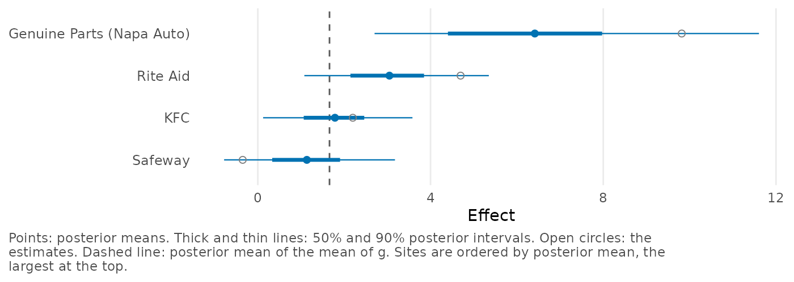
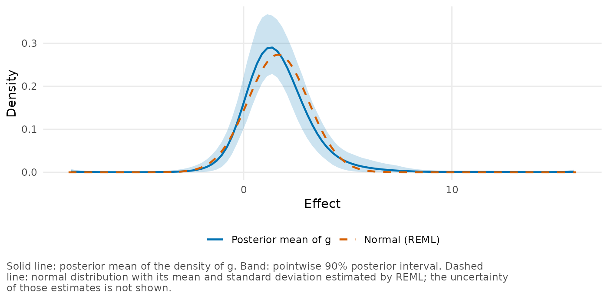

This vignette shows how to pass estimates and standard errors to
bayes_efron_fit() from a data frame, from metafor or as two
vectors. It also shows where the site labels appear in the results, and
how to compare a fit with the normal random-effects model from
metafor.
The model needs two numbers for each site: an estimate of the effect
and the standard error of that estimate. Data rarely arrive in that
form. A table may have variances where standard errors are wanted, or
the estimates may still have to be computed from the means, standard
deviations and sample sizes of two groups. The sites (studies, firms,
schools) usually have names as well, which you will want to see again
beside the results. as_bef_data() handles the first case
and, together with metafor::escalc(), the second, and a fit
keeps the names.
Estimates in a data frame
We start with the callback data from
vignette("bayesEfron"), which have one row for each of 97
firms.
head(krw_discrimination[, c("firm_name", "yi", "vi", "sei")], 4)
#> firm_name yi vi sei
#> 1 Rite Aid 0.046957123 0.0002622320 0.01619358
#> 2 KFC 0.022000000 0.0002342345 0.01530472
#> 3 Victoria's Secret 0.042161613 0.0005271759 0.02296031
#> 4 United Rentals 0.005708306 0.0002264274 0.01504751yi is the difference between the callback probabilities
of applications with distinctively white and distinctively Black names
at the firm, vi its sampling variance and sei
its standard error. The function as_bef_data() finds the
two columns that it needs by their names, and its site
argument names the column that contains the labels:
dat <- as_bef_data(krw_discrimination, site = "firm_name")
dat
#> <bef_data>
#> Sites: 97
#> Source: data.frame
#> theta_hat: min -0.02254; median 0.01781; max 0.09817
#> sigma: min 0.005344; median 0.01581; max 0.0392
#> Names: Rite Aid, KFC, Victoria's Secret, ...It takes the first of these names that the data frame has, here
yi and sei:
- estimates:
theta_hat,yi,estimate,effect,y; - standard errors:
sigma,se,std_error,stderr,sei.
If your columns have other names, give them in the arguments
theta_hat and sigma. If the second column
contains variances, as vi does, set
variance = TRUE and the function takes the square
roots.
from_variances <- as_bef_data(krw_discrimination, sigma = "vi",
variance = TRUE, site = "firm_name")
all.equal(from_variances$sigma, dat$sigma)
#> [1] TRUEas_bef_data() warns when a column with a name that
begins with vi or var is given as the standard
errors without variance = TRUE. It cannot detect variances
under another name, because both are positive numbers, so check the
range of sigma in the printed object.
The function throws an error if a value is missing, if a standard error is not positive, if a label occurs twice or if there are fewer than 5 sites. It does not drop incomplete rows, because the number of sites would then change without notice. For example, a missing standard error gives this error:
incomplete <- krw_discrimination
incomplete$sei[3] <- NA
try(as_bef_data(incomplete))
#> Error in as_bef_data(incomplete) :
#> Columns `yi` and `sei` must not contain missing values (found 0 and 1).We can pass dat to bayes_efron_fit() as it
is.
fit <- bayes_efron_fit(dat, seed = 20250807)You can also pass the data frame itself when its columns have the names listed above. Its row names, if they have been set, are then the labels.
Group summaries and metafor
Often the estimates have not been computed yet, and each study
reports the mean, the standard deviation and the size of two groups.
From such summaries, metafor::escalc() computes an estimate
and its sampling variance (Viechtbauer 2010), and
as_bef_data() accepts its result.
As an example we apply escalc() to the 9 studies that
Normand (1999) analyzed, which compare the
length of hospital stay of stroke patients under specialized and under
routine care. The data are in the metadat package, which metafor
loads.
library(metafor)
stroke <- escalc(
measure = "MD",
m1i = m1i, sd1i = sd1i, n1i = n1i,
m2i = m2i, sd2i = sd2i, n2i = n2i,
data = dat.normand1999, slab = source
)
stroke[, c("source", "m1i", "m2i", "yi", "vi")]
#>
#> source m1i m2i yi vi
#> 1 Edinburgh 55 75 -20.0000 40.5080
#> 2 Orpington-Mild 27 29 -2.0000 2.0806
#> 3 Orpington-Moderate 64 119 -55.0000 15.6984
#> 4 Orpington-Severe 66 137 -71.0000 150.2222
#> 5 Montreal-Home 14 18 -4.0000 17.3077
#> 6 Montreal-Transfer 19 18 1.0000 1.1673
#> 7 Newcastle 52 41 11.0000 94.5891
#> 8 Umea 21 31 -10.0000 6.3109
#> 9 Uppsala 30 23 7.0000 19.8423We set measure = "MD", so the estimate yi
is the difference between the two means, here in days, and
vi is the sum of the two squared standard errors of the
means, \(s_1^2 / n_1 + s_2^2 / n_2\). A
difference in the original units is the natural choice when every study
measures the outcome in the same way, as these do. When the studies use
different instruments, as the teacher expectancy studies in
vignette("teacher-expectancy") did with their IQ tests, the
standardized mean difference (measure = "SMD") puts the
estimates on a common scale.
From an escalc object, as_bef_data() takes
the column yi as the estimates and the square roots of
vi as the standard errors.
stroke_dat <- as_bef_data(stroke)
as.data.frame(stroke_dat)
#> site label estimate se
#> 1 1 Edinburgh -20 6.364591
#> 2 2 Orpington-Mild -2 1.442444
#> 3 3 Orpington-Moderate -55 3.962121
#> 4 4 Orpington-Severe -71 12.256518
#> 5 5 Montreal-Home -4 4.160251
#> 6 6 Montreal-Transfer 1 1.080436
#> 7 7 Newcastle 11 9.725694
#> 8 8 Umea -10 2.512146
#> 9 9 Uppsala 7 4.454471The labels are the ones given to escalc() in its
slab argument. Without slab, row names that
have been set are used.
Although 9 studies are enough for the function to run, we can learn
little from them about the shape of the distribution of effects. With so
few sites, the result depends strongly on the range of the grid, as
vignette("teacher-expectancy") shows for 19 studies.
Two vectors
If your estimates and standard errors are two vectors, pass them to
bayes_efron_fit() as its first two arguments. The names of
the estimates, if they have any, become the labels. To have the two
vectors checked before running a fit, give them to
as_bef_data() as a list, in which an element
names can supply the labels:
as_bef_data(list(
theta_hat = krw_discrimination$yi,
sigma = krw_discrimination$sei,
names = krw_discrimination$firm_name
))
#> <bef_data>
#> Sites: 97
#> Source: list
#> theta_hat: min -0.02254; median 0.01781; max 0.09817
#> sigma: min 0.005344; median 0.01581; max 0.0392
#> Names: Rite Aid, KFC, Victoria's Secret, ...Whatever the form, the estimates should be the original ones. Estimates that have already been shrunk, such as the posterior means from another model, are not independent noisy observations of the effects, and passing them as if they were changes the model.
Site labels in the results
A fit stores the site labels. To show this we use
krw_fit, the fit of the callback data that comes with the
package, made with the bayes_efron_fit() call above and
thin = 15. Its table of site effects has the labels in the
column label.
fit <- krw_fit
head(site_summary(fit)[, c("site", "label", "estimate", "mean", "lower",
"upper")], 4)
#> site label estimate mean lower upper
#> 1 1 Rite Aid 0.046957123 0.03048175 0.010775168 0.05349968
#> 2 2 KFC 0.022000000 0.01786494 0.001227187 0.03581179
#> 3 3 Victoria's Secret 0.042161613 0.02334782 0.002864899 0.04801767
#> 4 4 United Rentals 0.005708306 0.01071991 -0.005107269 0.02719213You can choose a site by its label wherever a function takes
sites, and the returned vectors are named by label. Here we
pick four firms and print, for each, the probability of a positive gap
and the posterior mean in percentage points:
chosen <- c("Rite Aid", "KFC", "Safeway", "Genuine Parts (Napa Auto)")
round(exceedance_prob(fit, sites = chosen), 3)
#> Rite Aid KFC Safeway
#> 0.997 0.962 0.835
#> Genuine Parts (Napa Auto)
#> 1.000
round(100 * coef(fit)[chosen], 2)
#> Rite Aid KFC Safeway
#> 3.05 1.79 1.14
#> Genuine Parts (Napa Auto)
#> 6.41The plots show the labels as well, here for the same four firms.
plot_sites(fit, sites = chosen, scale = 100)
Without labels a site is identified by its number, which is its position in the input, so keep the rows of your data in the order in which they were fitted. If the sites have labels, that order no longer matters for finding a site.
Comparison with the normal model from metafor
A metafor user will want to see the result next to the normal
random-effects model. We plot the estimated distribution of effects with
plot_g(), and normal = TRUE adds that model: a
normal distribution with its mean and standard deviation estimated from
the same estimates by restricted maximum likelihood (REML).
plot_g(fit, normal = TRUE, scale = 100)
The dashed curve leaves out the uncertainty of its two parameters,
whereas the band around the solid curve is a posterior interval. See
vignette("bayesEfron") for what we can conclude about the
callback gaps from the two curves.
The same two numbers come from metafor::rma() once its
iteration is allowed to run to convergence, here with a smaller
threshold:
loose <- rma(yi, vi, data = krw_discrimination, method = "REML")
tight <- rma(yi, vi, data = krw_discrimination, method = "REML",
control = list(threshold = 1e-10))
rbind(default = c(mean = coef(loose)[[1]], sd = sqrt(loose$tau2)),
tightened = c(mean = coef(tight)[[1]], sd = sqrt(tight$tau2)))
#> mean sd
#> default 0.01655591 0.01464373
#> tightened 0.01654070 0.01458854By default rma() stops when its estimate of the variance
of the effects changes by less than \(10^{-5}\) from one step to the next. That
is early for estimates on a small scale. The variance of these gaps is
about 0.0002, and the default leaves the standard deviation 0.4% away
from the value at convergence, which is the value that
plot_g() shows. To plot a normal model fitted in another
way, give its two numbers as
normal = c(mean = ..., sd = ...).